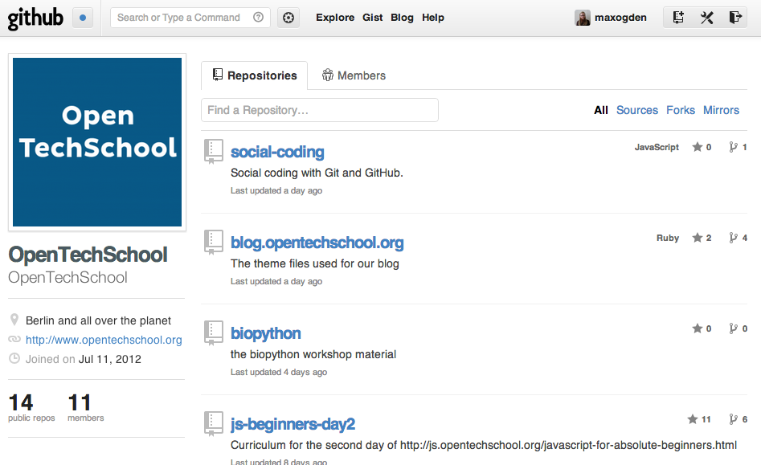
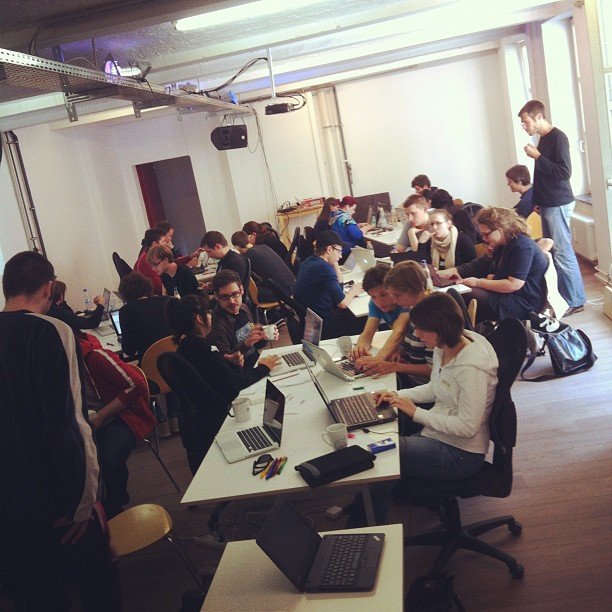

use ↔ to navigate
javascript
for
cats
who here has a cat?
observation #1
JS !== CS
it is taught like CS
we need better introductory materials
the better you get, the worse you get at teaching
people are going nuts over programming education
JS for absolute beginners
not necessarily JS for absolutely new computer scientists
not for dummies
observation #2
the javascript spectrum
users
authors
cats are lazy
if you are on a high horse you should consider joining us plebs down yonder
"What garbage. REPL is NOT the command line. And you spend more time wading through the silly baby talk to get to the meat of the topic. Waste of time."
observation #3
order matters when introducing concepts
here is the order that JS for cats uses:
strings
values
variables
functions
using functions
built in functions
downloading functions
writing new functions
loops
arrays
objects
observation #4
functions are really important
functions are really really important
functions are really really really important
functions are really really really really important
functions are really really really really really important
observation #5
you can skip most of JS
prototypes?
scope?
closures?
when to introduce these?
ignore the bad parts
semicolons
for loops
compile-to languages
inheritance
abstraction
observation #6
reduce cognitive load
function vs method
mocking vs stubbing
standards bodies aren't cat friendly
window.on('bird', function() {})
observations #6-#34
observation #35
types of learning
immersive, visual, procedural, etc


Marijn Haverbeke
if we don't actively try to make JS more accessible we won't expand our demographic
observation #36
amateurization
populist
RomanEmpire.js
133 BC
Tiberius Gracchus enacts a law to redistribute land to the poor farmers
1995 AD
Brendan Eich creates JavaScript to redistribute programming to the poor browser users
133 BC
Tiberius Gracchus is assassinated along with 300 of his supporters
1995 AD
JavaScript widely ignored or hated
123 BC
Tiberius's brother Gaius Gracchus enacts populist laws
2006 AD
John Resig introduces populist JavaScript framework
121 BC
Gaius Gracchus, cornered, commits suicide and thousands of his followers are killed
2008 AD
John Resig disappears into obscurity (very happily)
THE FUTURE
applied js/project based
github for cats
server side catgramming
debugging for cats
data viz for cats
css for cats
here is your homework:
find a cat
find a cat (or a human)
find a cat (or a human) and teach it JS